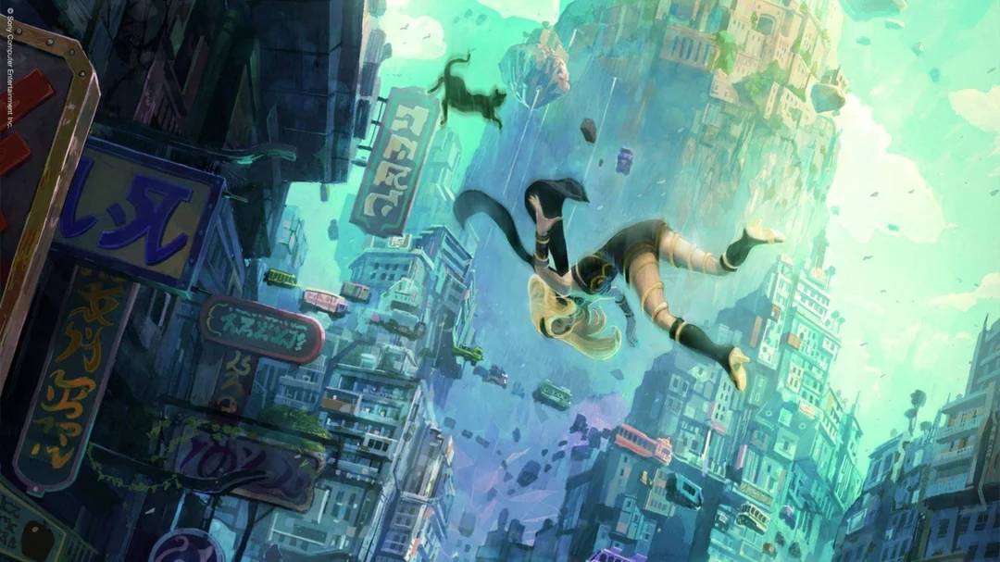
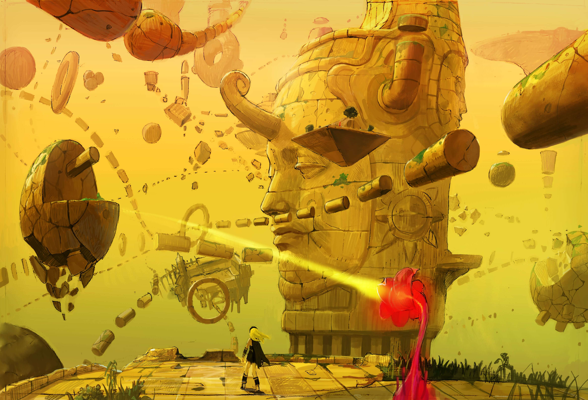

Un Monde Suspendu
L’univers de Gravity Rush est un mélange unique de villes flottantes, de mystères gravitationnels et de civilisations oubliées. C’est un monde où les lois de la physique n’obéissent plus aux mêmes règles.
Monde

Hekseville
La première ville où commence l’aventure. Ses quartiers flottants et sa population attachante servent de décor aux débuts de Kat.

Jirga Para Lhao
Une ville orientale et verticale introduite dans Gravity Rush 2. Complexe, animée et culturellement riche, elle cache bien des secrets.

Le Monde de l’Étrange
Un lieu mystérieux entre rêve et réalité, souvent lié aux failles gravitationnelles. C’est là que Kat découvre une autre facette de sa destinée.
